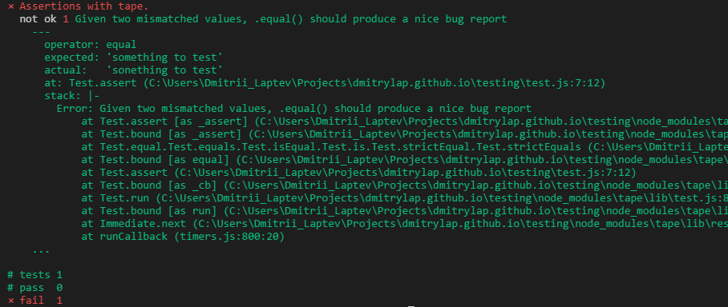
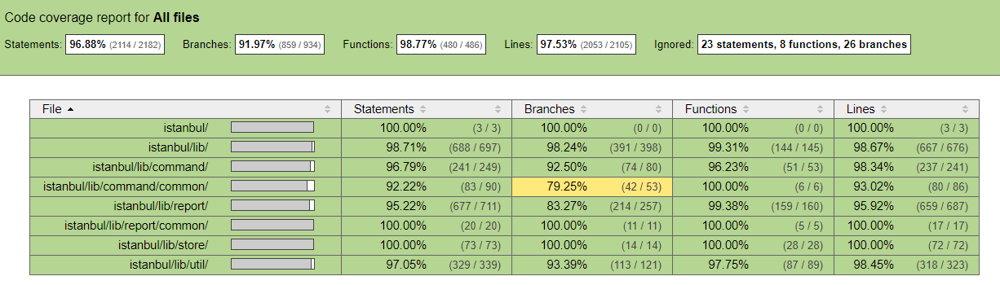

Test Pyramid

You should have much more unit tests then for example UI tests.
Writing automated tests for your software
Unit tests exists to verify individual units of your software. Units are modules, components or functions.
Units exist independently of each other and the rest of the application. Presence of unit tests encourages modularity to your software.
If you cannot write tests easily not mocking a whole lot of other stuff that indicates that your program is not modular enough.
Every module should have tests and every application should be made of modules.
You should have much more unit tests then for example UI tests.
If you test a module you should test only methods that are exposed by that module.
Treat the unit you test as a black box. Don't dig into its internals.
Your test messages should be clear enough to use them as bug reports.
Test runner is a tool that allows you to run your tests, define setups and retrieve output.
const test = require('tape');
test('Assertions with tape.', assert => {
const expected = 'something to test';
const actual = 'sonething to test';
assert.equal(actual, expected,
'Given two mismatched values, .equal() should produce a nice bug report');
assert.end();
});

A test spy is a function that records arguments, return value, the value of this and exception thrown (if any) for all its calls.
const callback = sinon.spy();
PubSub.subscribe("message", callback);
PubSub.publishSync("message");
assertTrue(callback.called);
Test stubs are functions (spies) with pre-programmed behavior.
Use a stub when you want to:
Control a method’s behavior from a test to force the code down a specific path. Examples include forcing a method to throw an error in order to test error handling.
When you want to prevent a specific method from being called directly (possibly because it triggers undesired behavior, such as a XMLHttpRequest or similar).
const callback = sinon.stub();
callback.withArgs(42).returns(1);
callback.withArgs(1).throws("TypeError");
callback(); // No return value, no exception
callback(42); // Returns 1
callback(1); // Throws TypeError
Mocks (and mock expectations) are fake methods (like spies) with pre-programmed behavior (like stubs) as well as pre-programmed expectations.
Mocks should only be used for the method under test. In every unit test, there should be one unit under test. If you want to control how your unit is being used and like stating expectations upfront (as opposed to asserting after the fact), use a mock.
const myAPI = { method: function () {} };
const spy = sinon.spy();
const mock = sinon.mock(myAPI);
mock.expects("method").once().throws();
PubSub.subscribe("message", myAPI.method);
PubSub.subscribe("message", spy);
PubSub.publishSync("message", undefined);
mock.verify();
assert(spy.calledOnce);
If you spend a lot of time making mocks and stubs that's a bad sign. Most likely you can greatly simplify both your app and your tests dividing them in more modular fashion.
Couple of mocks here and there are fine. You cannot get away from making some side-effects with fs or http modules.
Avoid sofisticated assertion expressions and keep your tests as simple as it's possible. You shouldn't spend a lot of your time doing tests.
Avoid setting up huge global contexts and share them between tests. It quickly becomes unmanagable and brings bugs that are not easy to catch.
Then simplier your tests are than easier people can understand and support them.
In order to understand test coverage of your application you can use the tool named "istanbul" to generate a coverage report.
It supports:
Sample Report
